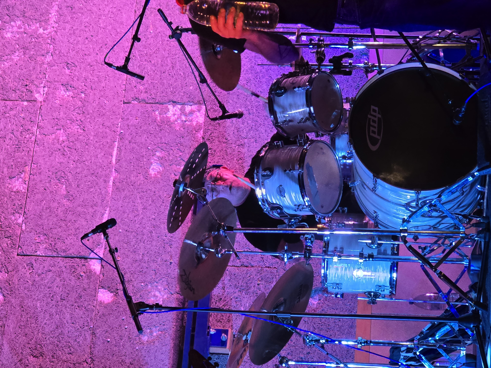

Né le 30 mai 1969, Bob frappe sa première peau bien avant de savoir où ça le mènera. Batteur depuis 45 ans, il monte sur scène pour de vrai dès l'âge de 23 ans, dans des groupes semi-professionnels qui ne font pas dans la demi-mesure. Il foule les planches du Transbordeur, du Glob, assure des premières parties remarquées — dont celle de Satan Joker — et forge son caractère de scène dans les groupes Runic puis The Bar Is Open.
Son jeu puise à des sources exigeantes : Buddy Rich, le maître absolu, lui enseigne que la batterie est un art total. Nicko McBrain d'Iron Maiden l'ancre dans un groove de fer. Munetaka Higuchi de Loudness lui insuffle technique et flamboyance. Scott Rockenfield lui apprend la justesse. Derrière ses fûts Tama ou Sonor, avec ses cymbales Paiste ou Zildjian, Bob traverse les genres sans jamais perdre le fil : d'AC/DC à Motörhead, du glam au heavy, en passant par le power et le speed metal.
En 2019, Bob rejoint Les Krakens — le groupe fondé cette même année par Glyn — et apporte avec lui des décennies d'expérience et une frappe aussi précise que dévastatrice. Ensemble, ils construisent un mur du son solide, sur lequel viennent s'appuyer les guitares de plus en plus metal du groupe. En septembre 2025, l'arrivée de Ned à la basse vient sceller une formation définitive, puissante et soudée. Depuis, c'est Bob qui fait trembler les planches — avec toujours la même conviction : une baguette levée, et le reste suit.
Repères
Born on May 30, 1969, Bob started hitting drums long before he knew where it would take him. A drummer for 45 years, he hit the stage for real at 23, playing in semi-professional bands that meant serious business. He performed at the Transbordeur and the Glob, opened for acts including Satan Joker, and built his stage identity through the bands Runic and The Bar Is Open.
His playing draws from the most demanding sources: Buddy Rich, the undisputed master, showed him that drumming is a complete art form. Nicko McBrain of Iron Maiden gave him an iron sense of rhythm. Munetaka Higuchi of Loudness inspired his technical flair and stage presence. Scott Rockenfield taught him precision. Behind his Tama or Sonor kit, crashing Paiste or Zildjian cymbals, Bob moves freely across genres without ever losing the groove — from AC/DC to Motörhead, through glam, heavy, power and speed metal.
In 2019, Bob joined Les Krakens — founded that same year by Glyn — bringing with him decades of experience and a drumming style as precise as it is devastating. Together, they built a solid rhythmic foundation for the band's increasingly heavy guitar sound to rest on. In September 2025, the arrival of Ned on bass completed the lineup, forging a tight, powerful unit ready for anything. Since then, Bob has been making the stage shake — with the same conviction he's always had: one stick raised, and everything else falls into place.
Timeline